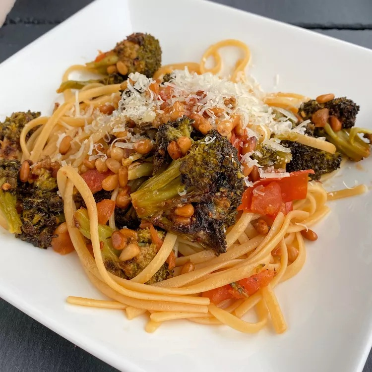

Linguini with Roasted Broccoli Pesto

Description
This pasta was an effort to use up the rest of the veggies on hand, and turned out to be kind of amazing. Roasting the veggies in the oven makes all the difference for the pesto.
Ingredients
- ½ (16 ounce) package linguine pasta
- 1 large head broccoli, trimmed and chopped
- ½ cup pine nuts, chopped
- ¼ cup grated Parmesan cheese
- 5 cloves garlic, crushed
- 5 tablespoons extra-virgin olive oil , divided
- 2 tablespoons lemon-pepper seasoning
- ½ teaspoon chicken soup base (such as Better than Bouillon®)
- 1 teaspoon extra-virgin olive oil
- 2 medium tomatoes, chopped
- 1 teaspoon red pepper flakes
- salt to taste
- 1 tablespoon butter
- 1 dash balsamic vinegar (Optional)
Steps
-
Bring a large pot of lightly salted water to a boil. Cook linguine at a boil until tender yet firm to the bite, about 11 minutes.
-
Meanwhile, preheat the oven to 400 degrees F (200 degrees C).
-
Combine broccoli and pine nuts in a baking dish. Add Parmesan cheese, garlic, 3 tablespoons olive oil, and lemon-pepper seasoning; toss to coat.
-
Bake in the preheated oven, removing every 5 minutes to stir, until broccoli is tender but still firm, 10 to 15 minutes.
-
Drain pasta, reserving 1 to 2 tablespoons of the cooking liquid. Mix cooking liquid with soup base in a small bowl; set aside. Return pasta to the pot.
-
Heat 1 teaspoon olive oil in a large skillet over high heat.
Add tomatoes, red pepper flakes, and salt. Cook, stirring often until some of the liquid has reduced, 3 to 5 minutes.
Reduce the heat to low and add broccoli mixture, 2 tablespoons olive oil, butter, and balsamic vinegar; stir to combine.
-
Transfer the entire vegetable mixture to the pasta pot. Add bouillon water, stir thoroughly, and serve immediately.
Return Home